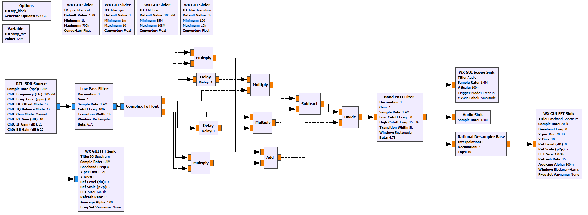

FM Demodulator in GNU Radio
Description
I was looking around for a reference GNURadio example which implemented the WBFM manually, but to my surprise I couldn't find one so I made one and thought I'd share. In this GNURadio project file I demonstrate one way you can demodulate FM signal content using only the math and filter blocks. The end result is of course is implemented within the WBFM demodulation block, although i am not sure if they use the same method.
Background
Frequency Modulation is a method of encoding a signal, such as an audio sample, to the instaneous frequency of sinusoid which has a some center/carrier frequency Fc The below image from Wikipedia does a good job of demonstrating what this looks like in the time domain and compares to AM Modulation.

The mathematical expression for a general input signal waveform I(t) with a maximum frequency deviation scalar of kf and center frequency fc is defined by:
Traditional methods of frequency demodulation can involve differentiation and envelope detection, but since we have directy I/Q samples from the RTL-SDR we can use a more elegant method which only requires basic elements. When we have two data streams of In-phase I(t) and Quadrature Q(t) data, the amplitude and phase components can be retreived as:
In the case of our frequency modulated signal of interest Y(t) we are interested in how the phase/angle changes over time. Differentiating the theta(t) with respect to time we have:
Above is the continuous time representation of the instantaneous freuency component of the I/Q stream. Since we have descrete samples from our transciever approximate the elementwise derivative of dQ/dt as:
Allowing us to re-write the descrete version of equation 1 as:
Ideally the denominator (which is the magnitude of the I/Q vector) should be a constant, but in the real world this is not always the case. In the image of a FM broadcast below we can see the the scheme provides an amplitude varying about 3 dB.
GNURadio
In the GNURadio implementation below, I use an RTL-SDR as the reciever and use equation 2 from above to demodulate wide band FM broadcasts. GNURadio companion project file can be downloaded Here.

The spectrum allocation inside the FM broadcast contains a few main sections. In the image below we can see the baseband signal content from 30 Hz to 15030 Hz is the Left + Right audio information to allow comptability with mono receivers. In the current implemntation of this demodulator we are listening to this L+R mono signal.

In the baseband spectrum plot below, we can see from 0 to around 20 kHz is our L+R spectrum and the 19 kHz pilot frequency clearly.
To implement stereo audio by utilizing the L-R after mixing down to baseband, the reconstruction is as follows:
Below is a capture of the full GNURadio Gui.

References
[1] S. Franke, “Wireless Communication Systems” University of Illinois at Urbana-Champaign.
[2] GNURadio, "GNU Radio Manual and C++ API Reference" http://gnuradio.org/doc/doxygen/.